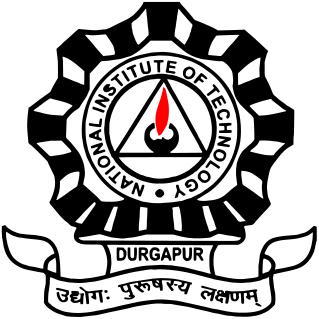

Bio
I am currently a 3rd-year Ph.D. student in the College of Information and Computer Sciences at UMass Amherst, working with
Prof. Yair Zick at FED.
My research focuses on Trustworthy Reinforcement Learning (RL) and Machine Learning, with a particular emphasis on developing practical, fair, and robust algorithms.
I've also gained substantial industry experience as a research intern. At IBM Research (New York), I worked across three summers on projects including meta-hyperparameter tuning in RL, behavior policy search for efficient risk estimation, and glossary matching using LLMs, under the guidance of Dr. Dharmashankar Subramanian and Dr. Nhan Pham. More recently, I interned at Microsoft Research (India), where I explored the robustness of LLM alignment algorithms.
Before starting my PhD, I completed a Master's degree in Computer Science at UMass Amherst in 2020, during which I had the privilege of working with external collaborators, Dr. Marek Petrik and Dr. Hima Lakkaraju. I also spent two years in industry as a Software Engineer at Flipkart and Endurance International Group. I graduated from NIT Durgapur with a B.Tech in Electronics and Communication Engineering.
Research Areas
Robust and Fair Decision Making Systems: My PhD research centers on reinforcement learning and resource allocation under uncertainty, adversarial conditions, and fairness constraints. In Soft-Robust Algorithms for Batch Reinforcement Learning, I propose the soft-robust criterion as a principled alternative to the standard percentile criterion, which often results in overly conservative policies. I develop two approximate algorithms that demonstrate, both theoretically and empirically, more balanced and effective decision-making.
Expanding on this, Percentile Criterion Optimization in Offline Reinforcement Learning introduces a Value-at-Risk-based dynamic programming approach to optimize robust policies without constructing explicit uncertainty sets. The method allows the learning of less conservative, uncertainty-aware policies. In Data Poisoning Attacks on Off-Policy Policy Evaluation Methods, we present the first known data poisoning framework targeting off-policy evaluation. Using influence functions, I show how small, targeted data perturbations can significantly skew policy value estimates, underscoring the need for robust evaluation techniques.
In Fair and Welfare-Efficient Constrained Multi-Matchings under Uncertainty, I address resource allocation when agent utilities are unknown, using both stochastic and robust optimization to balance fairness and efficiency. These methods are validated on real-world datasets, such as reviewer assignments. I also contributed to On Welfare-Centric Fair Reinforcement Learning, where we introduce a framework in which an agent receives vector-valued rewards from multiple beneficiaries and optimizes a specified welfare function. The study shows that welfare-optimal policies are inherently stochastic and start-state dependent, and presents the E4 learner, which operates within an adversarial-fair learning framework to manage exploration and maintain welfare guarantees.
Large Language Models (LLMs): My research focuses on understanding and enhancing the reasoning abilities, fine-tuning behavior, and factual unlearning of large language models. In On the Impact of Fine-Tuning on Chain-of-Thought Reasoning, I investigate how fine-tuning affects LLMs' reasoning capabilities. The study reveals that while fine-tuning improves task-specific performance, it can compromise the consistency and faithfulness of chain-of-thought reasoning across dataset, highlighting critical trade-offs between optimization and reasoning integrity.
Currently, I am also developing counterfactual verifiers for mathematical and logical reasoning tasks, using counterfactual data augmentation and contrastive loss to improve their robustness.
In Matching Table Metadata with Business Glossaries Using Large Language Models, I apply LLMs to the practical task of aligning enterprise metadata with business glossaries. This work demonstrates that LLMs can infer complex relationships between table column names and glossary descriptions without manual tuning, enabling scalable metadata alignment in restricted-access environments.
As a contributor to the Alternate Preference Optimization (AltPO) project, I helped design a method for effective machine unlearning in LLMs. AltPO addresses the limitations of existing unlearning techniques, such as performance degradation and incoherent output, by combining negative feedback with in-domain positive examples, achieving more consistent unlearning and better overall model utility.
Education

P.h.D. in Computer Science
University of Massachusetts Amherst.
Started PhD in Fall 2022.
Robust Decision Making Systems. Supervised by
Prof. Yair Zick.
Master in Computer Science
University of Massachusetts Amherst. 2018.
Thesis: Soft Robust Algorithms for Batch RL.

Bachelor of Technology (B.Tech) in Electronics and Communications Engineering
National Institute of Technology, Durgapur B.E. 2016.
Experience


-
Amazon (Central ML Team), Seattle Spring 2024
- RESEARCH INTERN
- Developed robust and interpretable web-browsing agents for shopping tasks.
-
Harvard Business School, MA Summer 2024
- RESEARCH INTERN
- Investigated the effects of fine-tuning on reasoning abilities of Large Language Models (LLMs).
-
Microsoft Research, India Summer 2023
- RESEARCH INTERN, MENTORS - GAURAV SINHA, NAGARAJAN NATARAJAN
- Developed methods to improve robustness of alignment algorithms like DPO for Small Language Models (SLMs).
-
IBM Research, Yorktown Heights, NY Summer 2023
- RESEARCH INTERN
- Developed novel methods that leverage LLMs and human feedback for accurate metadata-to-business-glossary matching.
- Fine-tuned LLMs using RLHF with contrastive loss to improve matching accuracy.
-
IBM Watson, Yorktown Heights, NY Summer 2022
- RESEARCH INTERN
- Designed novel algorithms for efficient hyperparameter tuning in reinforcement learning.
-
IBM Watson, Yorktown Heights, NY Summer 2021
- RESEARCH INTERN
- Integrated Off-Policy Policy Evaluation algorithms into an automated optimization framework.
- Developed a variance-minimizing technique for risk estimators using influence functions from robust statistics.
-
Harvard Business School, MA Winter 2020-2021
- RESEARCH INTERN
- Developed a novel data-poisoning attack framework to analyze the sensitivity of off-policy evaluation methods.
Flipkart, Bangalore, India Aug 2017 - Jul 2018
- SOFTWARE ENGINEER
- Built DL model to detect anomalous payouts in accounting systems.
- Developed stock ledger generator API and invoice register API.
- Provided on-call support for inventory valuation and warehouse transfer systems.
Endurance International Group, Bangalore, India Jul 2016 - Aug 2017
- SOFTWARE ENGINEER
- Created APIs for web orchestration, smart search, and session management.
- Developed ML system to detect parked domains.
- Built Imagio: a fast keyword- and color-filtered image search tool.
Publications
Please visit my Google Scholar page for an updated list of publications.
-
Elita Lobo, Nhan Pham, Dharmashankar Subramanian, Tejaswini Pedapati.
A Metahyperparameter Tuning Framework for Reinforcement Learning.
In-Submission: Patents 2023 - Reinforcement Learning
[Under Review]
-
Elita Lobo, Nhan Pham, Oktie Hassanzadeh, Dharmashankar Subramanian, Nandana Sampath Mihindukulasooriya, Long Vu.
A novel system for metadata to glossary matching in data lakes using human feedback and generative models.
In-Submission: Patents 2024 - Data Systems
-
Elita Lobo, Chirag Agarwal, Hima Lakkaraju.
On the Impact of Fine-Tuning on Chain-of-Thought Reasoning in LLMs.
NACCL 2025 - Large Language Models
[Paper]
-
Anmol Mekala, Vineeth Dorna, Shreya Dubey, Abhishek Lalwani, David Koleczek, Mukund Rungta, Sadid Hasan, Elita Lobo*.
Alternate Preference Optimization for Unlearning Factual Knowledge in Large Language Models.
COLING 2024 - Knowledge Unlearning
[Paper]
-
Elita Lobo*, Justin Payan*, Cyrus Cousins, Yair Zick.
Fair and Welfare-Efficient Resource Allocation under Uncertainty.
NeurIPS 2024 - Fairness & Optimization
[Paper]
-
Cyrus Cousins, Elita Lobo, Kavosh Asadi, Michael L. Littman.
On Welfare-Centric Fair Reinforcement Learning.
RLC 2024 - Reinforcement Learning
(Outstanding Paper)
[Paper]
-
Vignesh Viswanathan, Elita Lobo, Yacine Izza, Gagan Biradar, Yair Zick.
Axiomatic Aggregations of Abductive Explanations.
AAAI 2023 - Explainable AI
[Paper]
-
Elita Lobo, Cyrus Cousins, Marek Petrik, Yair Zick.
Percentile Criterion Optimization in Offline Reinforcement Learning.
NeurIPS 2023 - Offline RL
[Paper]
-
Elita Lobo, Harvineet Singh, Cynthia Rudin, Himabindu Lakkaraju.
Data Poisoning Attacks on Off-Policy Policy Evaluation Methods.
UAI 2022 - Robustness in RL
(Top 5%)
[Paper]
-
Elita Lobo, Oktie Hassanzadeh, Nhan Pham, Nandana Mihindukulasooriya, Dharmashankar Subramanian, Horst Samulowitz.
Matching table metadata with business glossaries using large language models.
Ontology Matching Workshop 2023 - Data Integration
[Paper]
-
Elita Lobo, Mohammad Ghavamzadeh, Marek Petrik.
Soft-robust Algorithms for Batch Reinforcement Learning.
IJCAI R2AW Workshop 2021 - Robust RL
[Paper]
-
Elita Lobo, Yash Chandak, Dharmashankar Subramanian, Josiah Hanna, Marek Petrik.
Behavior Policy Search for Risk Estimators in RL.
NeurIPS Safe-RL Workshop 2021 - Safe RL
[Paper]
-
Elita Lobo, Harvineet Singh, Cynthia Rudin, Himabindu Lakkaraju.
Data Poisoning Attacks on Off-Policy Policy Evaluation Methods (Workshop version).
ICLR PAIR2Struct Workshop 2022 - Security in ML
[Paper]
Skills
- Programming Languages: Python, C++, Java
- Libraries & Frameworks: MySQL, PyTorch, TensorFlow, Transformers, Spring Boot, ElasticSearch
- Research Areas: Machine Learning, Reinforcement Learning, Convex Optimization, Natural Language Processing
Published Software
Mentorship Experience
-
PhD Applicant Support Program: Mentored underrepresented students applying to graduate school.
2023, 2024
-
CS 696DS Industry Mentorship Program: Guided master's students through an NLP-focused research project.
UMass Amherst, 2024-2025
Awards & Achievements
-
Graduate Scholarship: Awarded the Anuradha and Hanuma Kodavalla Graduate Scholarship in Computer Science.
UMass Amherst, 2023 - $10,000
-
Fellowship: Recipient of the UNH CEPS Graduate Fellowship.
University of New Hampshire, 2020
-
AI Fellowship: Recipient of the Robin Popplestone Fellowship in Robotics and Artificial Intelligence.
UMass Amherst, 2019 - $5,000
-
1st Place: Hackday 10 (Marketplace Category) at Flipkart.
Flipkart, 2018
-
Top 1%: 99 percentile in All India Engineering Entrance Exam (State Rank 9).
India, 2012
-
Top Rank: State Rank 11 (99.9 percentile) in Goa Engineering Entrance Exam.
India, 2012
Teaching Experience
-
Teaching Assistant: Supported instruction and grading for core Computer Science courses, including:
Operating Systems (CS377, Fall 2018),
Reasoning under Uncertainty (CS240, Spring 2019),
Numerical Optimization (CS590OP, Fall 2019),
Convex Optimization (CS690OP, Spring 2020).
University of Massachusetts Amherst